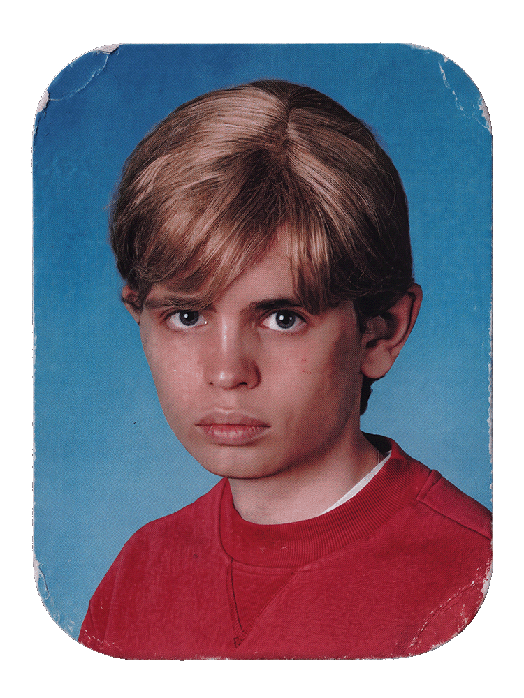
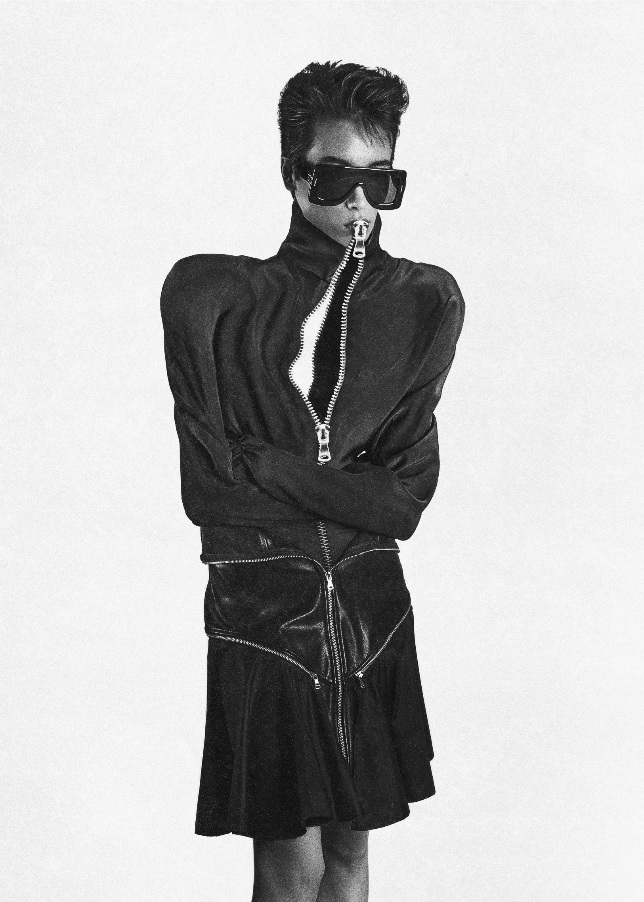
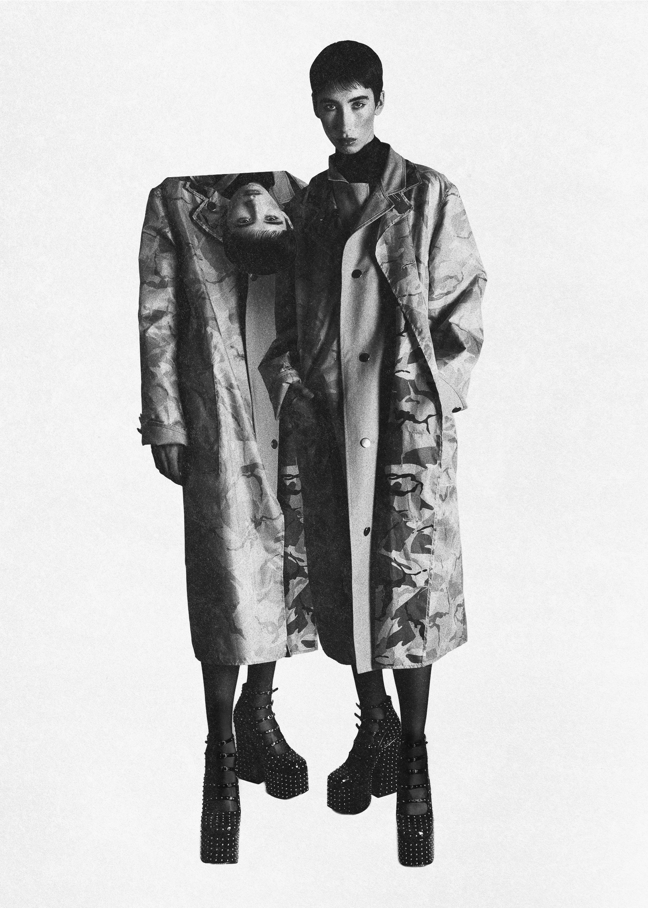
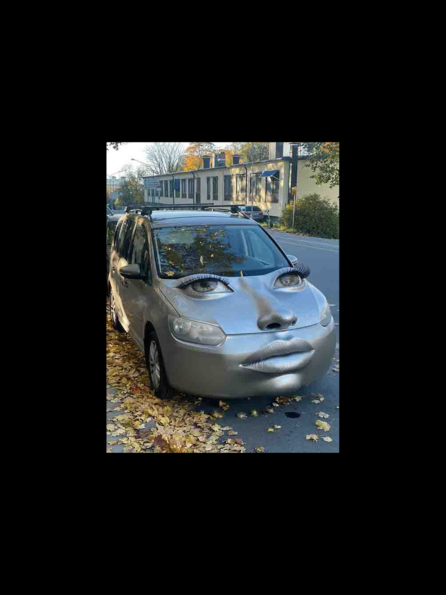
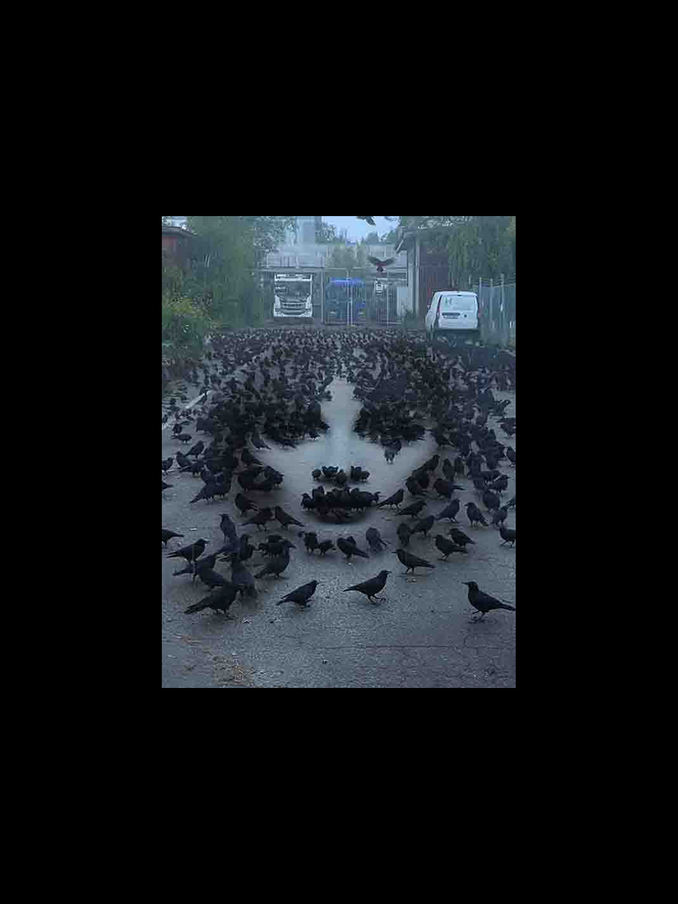

ELVIN ODELHOLM
CORE CURRICULUM
Photographic Art Project
Photographic Art Project
A reflection on Sweden’s compulsory school curriculum, realised as a photographic series and a book containing all 658 core content requirements.
Presented at the Graduation Exhibition at Beckmans College of Design, 2025.
Winner of the F&B Happy Scholarship 2025.
Presented at the Graduation Exhibition at Beckmans College of Design, 2025.
Winner of the F&B Happy Scholarship 2025.
Supervisor: Peter Ström
Head of Course: Sophia Wood
School: Beckmans College of Design
Head of Course: Sophia Wood
School: Beckmans College of Design
ATELIER CRU
Brand Photography
Brand Photography
Brand photography for the launch of Exocarps, a collection by Atelier Cru. Built around zips, layers and peel-away openings, the garments are designed to be unzipped, reconfigured and worn in new ways. The imagery extended this concept of impossible possibilities.
Featured in Kaltblut.
Featured in Kaltblut.
Client: Atelier Cru
Art Direction and Photography: Elvin Odelholm
Styling: Rebecca Cohen
HMUA: Tony Lundström
Fashion Designer: Göran Sundberg
Art Direction and Photography: Elvin Odelholm
Styling: Rebecca Cohen
HMUA: Tony Lundström
Fashion Designer: Göran Sundberg
OFF-WHITE™
AI Visuals and Post Production
AI Visuals and Post Production
Services Généraux was asked to create a campaign together with Highsnobiety for the launch of OFF-WHITE™ Lab.
My role was to work on the initial pitch, develop concepts for a series of short form visuals as well as producing some of the final art. The attached visuals were part of my personal responsibility.
Featured in Highsnobiety.
My role was to work on the initial pitch, develop concepts for a series of short form visuals as well as producing some of the final art. The attached visuals were part of my personal responsibility.
Featured in Highsnobiety.
Client: Off-White™
Commissioned by: Highsnobiety
Creative Studio: Services Généraux
Commissioned by: Highsnobiety
Creative Studio: Services Généraux
BOUND 2
AI Art Project
AI Art Project
An explorative series about being bound together.
Made for Services Généraux as part of their reoccurring portfolio series.
Made for Services Généraux as part of their reoccurring portfolio series.
Art Direction: Elvin Odelholm and Josefine Nicklasson
Image Production: Elvin Odelholm
Studio: Services Généraux
Image Production: Elvin Odelholm
Studio: Services Généraux
JIMINY CRICKET
Art Project
Art Project
Svenskt Tenn and the Beijer Foundation collaborated with Beckmans College of Design to create an annual exhibition spreading awareness on current topics of research. The topic of 2024 was AI, my group explored a future scenario in which AI would work as an external supercharged conscience, helping people to make moral decisions. To highlight our area of research and to draw attention to the exhibition, me and a classmate built a two meter tall buffed up Jiminy Cricket out of styrofoam and green paint.
The sculpture was exhibited at the Svenskt Tenn Stockholm Store and later at Riche Fenix.
The sculpture was exhibited at the Svenskt Tenn Stockholm Store and later at Riche Fenix.
Team: Elvin Odelholm and Jonatan Modin
Collaborators: Beijer Foundation and Svenskt Tenn
Head of Course: Sophia Wood
School: Beckmans College of Design
Collaborators: Beijer Foundation and Svenskt Tenn
Head of Course: Sophia Wood
School: Beckmans College of Design
AD-SPACE FOR RENT
Photographic Art Project
Photographic Art Project
Name a public surface, that isn’t a potential ad space. To explore the concept of public advertising, I borrowed a horse on the Swedish countryside and tried putting it to work.
Translation: Ad-Space For Rent!
Part of my application work for Beckmans College of Design.
Translation: Ad-Space For Rent!
Part of my application work for Beckmans College of Design.
Solo Project
MICRO-SHORTS
Video Art Project
Video Art Project
Videos shot on iPhone as part of a personal series.
Solo Project
DEEPFAKE
AI Art Project
AI Art Project
Visuals made with AI as part of a personal series.
Solo Project
MATERIAL WORLDS
Lookbook Photography
Lookbook Photography
Lookbook photography for Material Worlds, a fashion show by students at Beckmans College of Design. To highlight the diverse materials in each look, every model was placed within a landscape constructed out of materials featured in their garments.
Art Direction: Elvin Odelholm
Photography: Elvin Odelholm and Jesper Smeding
Head of Course: Göran Sundberg
Head of Program: Pär Engsheden
Photography: Elvin Odelholm and Jesper Smeding
Head of Course: Göran Sundberg
Head of Program: Pär Engsheden








